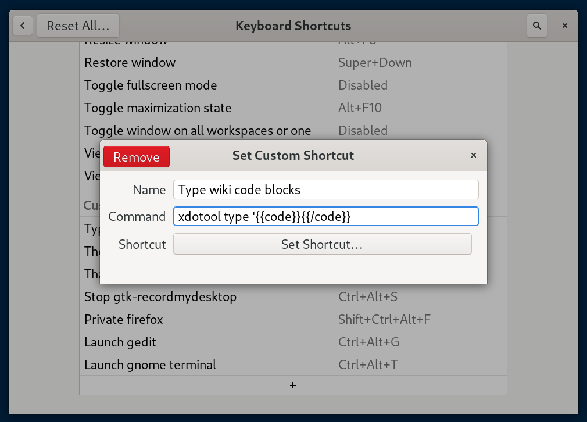
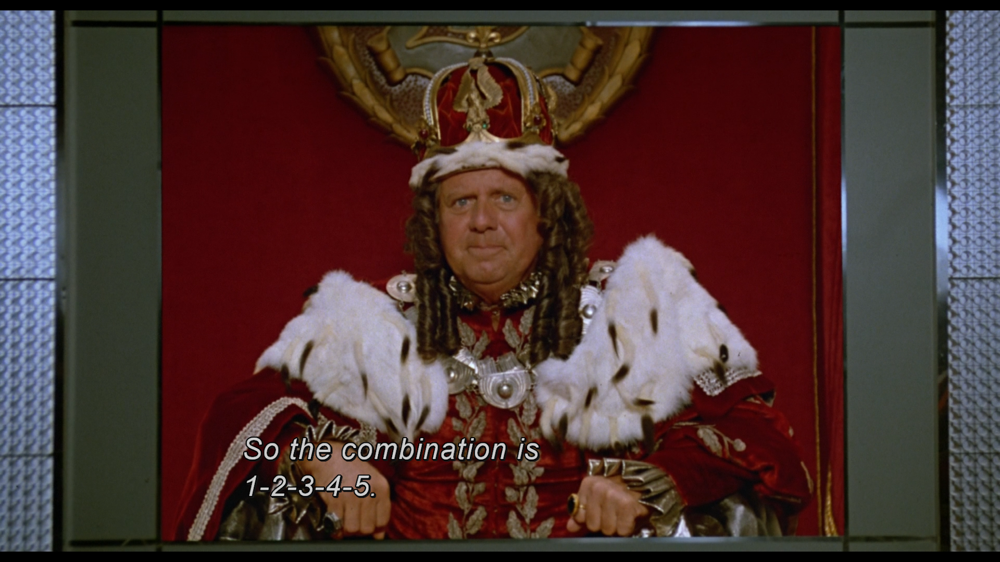

Ever find yourself typing more characters than is necessary when using some annoying application or website? Here’s a quick hack around that.
There’s a magic program called xdotool written by Jordan Sissel
that solves this problem. I’ve known about his excellent work for years, but
only today did I learn he also wrote xdotool. It’s named as such because it
tells the X server to do something for you.
You might want to look at man xdotool to learn all that it’s capable of, but
for now, open a terminal and try running:
xdotool type 'echo james is awesome' ; xdotool key Return`
This should type that command out and also simulate an enter press for you.
I needed to use a piece of legacy wiki software to write up some docs. I
commonly add code blocks like this into the body, and with modern tools it’s
as simple as typing a backtick.
With this software, you need to enclose your text within {{code}} and
{{/code}} blocks. (No I have no idea why the designer thought this was a good
idea.) These are annoying to constantly type so I decided to wrap it with a
keyboard shortcut.
Open up GNOME’s Keyboard Shortcuts dialog and add a new entry at the bottom.
|  |
| This is what the GNOME keyboard shortcuts dialog looks like. |
I chose a shortcut like Control-Alt-O. To test, I then opened up a text editor
and typed the shortcut to run it… And gnome-calculator opened. Hmmm, what’s
happening?
As it turns out, it’s as if someone was typing those characters, but you’ll
remember that you’re still holding the Control and Alt keys… So as
xdotool types the C in {{code}} it’s as if someone pressed
Control-Alt-C which in my case opens the calculator! Thankfully, there’s an
easy solution to this. Add the --clearmodifiers flag and this problem goes
away. Your command should now look like:
xdotool type --clearmodifiers '{{code}}{{/code}}'
Of course, if you can, you should try and switch to using wayland instead of
X. I’m still using X because of regressions in some GNOME/GTK apps.
Thankfully, there’s a ydotool that seems to do the same kind of thing for
wayland. There are rpm packages available for both tools on Fedora.
Unfortunately, the ydotool doesn’t seem to support the --clearmodifiers
flag, so if you want to simulate that, I recommend using this form instead:
bash -c 'sleep 0.5s && ydotool type "{{code}}{{/code}}"'
This will give you a moment to type the shortcut and release the modifier keys before the actual magic typing occurs. Feel free to customize the delay to your suiting.
You should definitely not use this to type your passwords. You should also
definitely not use this to type your yubikey prefixes. But if you were to, it
might look something like this:
bash -c 'sleep 0.5s && xdotool type --clearmodifiers hunter2 && xdotool key --clearmodifiers Return'
if hunter2 was your password. For yubikey pin prefixes (this is where you
start by typing a prefix of characters, and then press your yubikey to enter
the remaining “half”) you might want something like:
bash -c 'sleep 0.5s && xdotool type --clearmodifiers 12345 && mpv /usr/share/sounds/gnome/default/alerts/sonar.ogg'
to give you a short audible notification when it’s time for you to press the physical button.
|  |
| It's probably safe since none of us have used our luggage in a long time. |
This is not the least safe approach to things since this doesn’t work through the GNOME screen locker, so as long as you keep your screen locked, it’s not too terrible.
Of course it would be really marvellous if someone spent some time innovating in
the local password manager space. Imagine that this was integrated into
gnome-keyring and GTK. (Kind of like how the emoji hooks work– press ^. to
see the pop-up, that’s <control> and the period character. Imagine getting a
dialog there to choose a password, and options to press enter or notify with a
bell sound after it typed it for you.)
I hope this was useful to you! I hope it made you think about hacks that can make your daily work go by easier. That’s the power of GNU and Linux.
Happy Hacking,
James
You can hire James and his team at m9rx corporation.
You can follow James on Mastodon for more frequent updates and other random thoughts.
You can follow James on Twitter for more frequent updates and other random thoughts.
You can support James on GitHub if you'd like to help sustain this kind of content.
You can support James on Patreon if you'd like to help sustain this kind of content.
Your comment has been submitted and will be published if it gets approved.
Click here to see the patch you generated.
{kind=link}
{kind=link}
{kind=link}
Comments
Nothing yet.
Post a comment